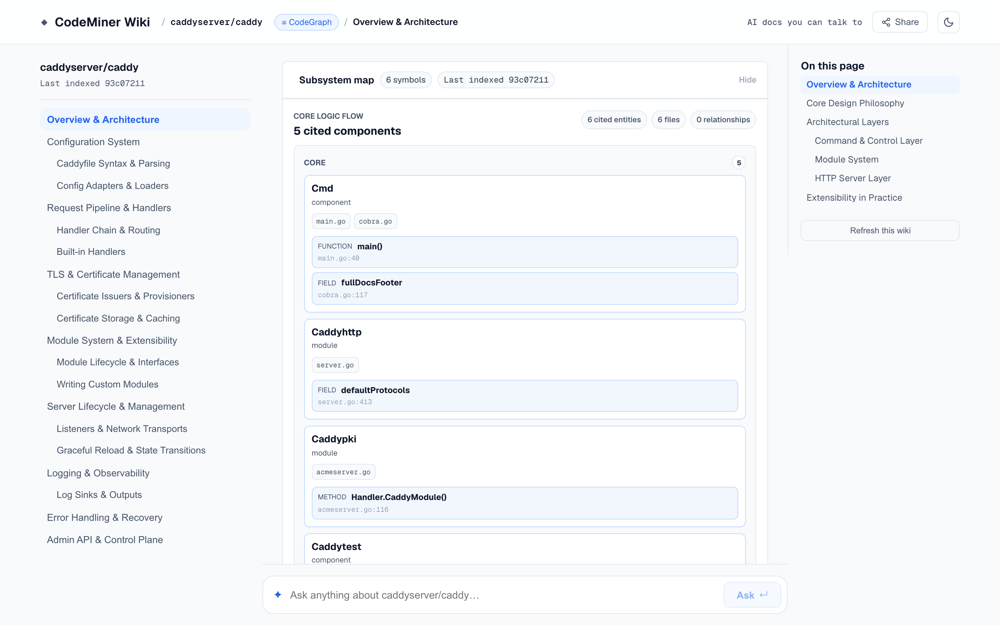

Find the right code.
Trace the calls.
Source context and typed graph navigation for Claude Code and Codex, across languages.
71.4% code-block Recall@5.
Model-planned grep → Jev on 100 real issues.
+12.8 points over the same grep candidates without reranking.
Experimental result · Method and limitations

Two commands. Your repository, your agent.
python -m pip install "codenib[graph,mcp]"
codenib codegraph init /path/to/your/repoPython 3.10+, Git, a clean checkout, and Claude Code or Codex. This shipping CodeGraph path runs locally without a model, API key, or GPU for CodeNib; your agent uses its own model. It is separate from the grep/Jev experiment.
Setup and language prerequisites · Ask your agent to start with explore_context.
Evidence you can inspect. Tools you can compare.
Follow source locations, check language coverage, and reproduce the retrieval methods.
Follow definitions and calls
Bounded context and typed SCIP/LSP graphs help your agent navigate from a question to the source. Compare the fit with grep, Serena, CodeGraph, and DeepWiki.
Compare repository tools →Know your language's support
14 language entries, 12 with graph backends. See which providers, prerequisites, and capabilities apply to your repository.
Open the language matrix →Reproduce the methods
Pinned LocAgent, Agentless, CoSIL, OrcaLoca, and RepoNavigator contracts. Dataset and scorer checks make the evaluation boundaries visible.
Explore agent integrations →Share a Wiki from your own repository with the existing GitHub Pages workflow.
From the blog
Implementation notes and measured tradeoffs in source-linked repository analysis.
Let a Model Plan grep, Then Let Jev Rank the Code
BM25, dense embeddings, hybrid retrieval, and model-planned grep on 100 CodeNib Base issues: accuracy, latency, and cost across complete retrieval and reranking paths.
Read the article →